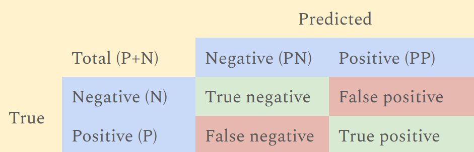
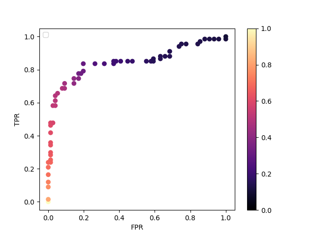
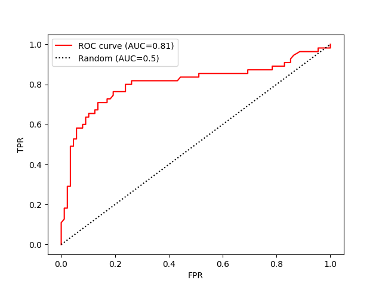
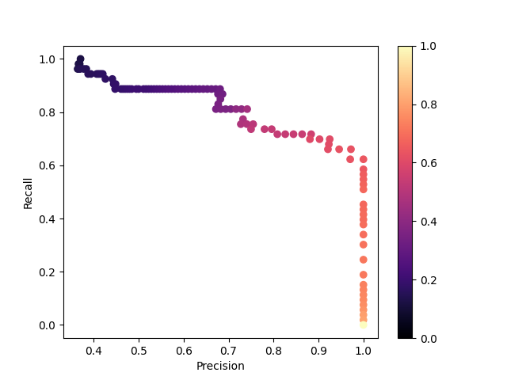

Evaluering og ubalanserte data
En modell som treffer 99 % kan være helt ubrukelig. Her lærer du å se hva en modell faktisk får til: confusion matrix, precision og recall, terskel, ROC og AUC, og hva du gjør når den ene klassen nesten aldri forekommer.
Etter dette kapittelet skal du kunne
- forklare hvorfor tapsfunksjon og evalueringsmetrikk bør være forskjellige
- sette opp en confusion matrix og regne ut accuracy, TPR/recall, TNR/spesifisitet, FPR og precision
- velge riktig metrikk når falske negative eller falske positive er dyrest
- forklare klassifiseringsterskelen, tegne og lese en ROC-kurve, og tolke AUC riktig
- plassere et punkt på ROC-kurven ut fra en confusion matrix
- forklare precision–recall-avveiningen og hvilke metrikker som avhenger av klassefordelingen
- forklare hvorfor ubalanserte data gir høy accuracy og lav recall, og regne på undersampling, oversampling og vektet cross-entropy
3.1Tap er for maskinen, metrikker er for mennesker
Husk definisjonen av maskinlæring fra kapittel 1: et program lærer hvis ytelsen på en oppgave blir bedre med erfaring. Da må vi kunne måle ytelsen. Det minste vi bør gjøre er å lagre tapet (loss) og treffsikkerheten (accuracy) for hver epoke under treningen, og plotte dem etterpå.

Slik leser du kurvene:
- Tapet synker og flater ut: gradient descent finner bedre parametre, og til slutt er det lite mer å hente.
- Kurvene har ikke flatet ut: modellen har ikke lært ferdig, og du trenger flere epoker (eller en større læringsrate, se kapittel 2).
- Accuracy hopper i trapper mens tapet synker jevnt. Det er normalt: accuracy endrer seg bare når et punkt krysser terskelen 0.5, mens tapet reagerer på hver minste endring i $\hat y$.
Men tap og accuracy forteller bare en liten del av historien. De sier ingenting om hvilke punkter modellen bommer på, eller om den er god på den klassen vi bryr oss mest om. Og et tall som «tap = 0.54» gir ingen intuitiv mening for et menneske. Derfor velger vi i tillegg en eller flere evalueringsmetrikker (evaluation metrics).
Tapsfunksjonen og metrikken har ulike jobber, og derfor ulike krav:
- Tapsfunksjonen må være deriverbar (og helst glatt og konveks), fordi gradient descent trenger gradienten. Accuracy er en trappefunksjon: den er flat nesten overalt (gradient 0) og hopper der et punkt krysser terskelen. Gradient descent ville stått bom stille.
- Metrikken må gi mening for mennesker og for problemet: «modellen finner 92 % av de syke» kan en lege bruke. «Cross-entropy er 0.31» kan hun ikke.
- Metrikken skal måle det vi faktisk bryr oss om, som ofte er en bestemt type feil (falske negative på et sykehus, falske positive for politiet). Den trenger ikke være deriverbar.
- Uavhengig kontroll: hvis vi bare ser på tallet vi optimerer, ser vi ikke svakhetene. En annen målestokk avslører om modellen har lært noe nyttig eller bare har lært å minimere tapet.
Tapet er motoren, metrikken er speedometeret. Motoren (tapet) må kunne drive bilen fremover jevnt, derfor må den være glatt og deriverbar. Speedometeret (metrikken) skal bare vises til sjåføren og må være lett å lese. Du styrer ikke bilen med speedometeret.
Hvilke av disse er gode grunner til at vi ikke bruker samme funksjon som tapsfunksjon og evalueringsmetrikk?
- Tapsfunksjonen må være deriverbar for gradient descent, mens metrikken ikke trenger å være det.
- Metrikken må være konveks, ellers kan den ikke regnes ut på testdata.
- Metrikken bør gi mening for mennesker og måle det problemet faktisk krever, f.eks. andelen syke vi finner.
- Tapsfunksjonen kan bare regnes ut på treningsdata, metrikken bare på testdata.
- Accuracy er stykkevis konstant, så gradienten er null nesten overalt og gir ingen retning å gå i.
Notatenes oppgave: Hva er flere grunner til at vi ikke bør velge samme tapsfunksjon og evalueringsmetrikk? Prøv å finne minst tre før du ser forslaget.
3.2Confusion matrix og metrikkene
For klassifisering bygger de fleste metrikker på confusion matrix (forvirringsmatrise). Den teller hvor mange punkter som ble klassifisert riktig (true) og feil (false) i hver klasse. Med to klasser, 0 = negativ og 1 = positiv, får vi fire celler:
- TP, sann positiv (true positive): faktisk positiv, predikert positiv. Syk, og modellen sier syk.
- TN, sann negativ (true negative): faktisk negativ, predikert negativ. Frisk, og modellen sier frisk.
- FP, falsk positiv (false positive, «falsk alarm», type I-feil): faktisk negativ, predikert positiv.
- FN, falsk negativ (false negative, «oversett tilfelle», type II-feil): faktisk positiv, predikert negativ.

Det siste ordet (positiv/negativ) er hva modellen sa. Det første ordet (sann/falsk) sier om modellen hadde rett. «Falsk positiv» = modellen sa positiv, og det var feil. Altså var punktet egentlig negativt.
Metrikkene
Fra de fire tallene regner vi ut metrikker. Her er alle du må kunne, med samme navn som i notatene (tabell 4). $P = TP + FN$ er antall faktisk positive og $N = TN + FP$ antall faktisk negative.
| Metrikk | Formel | Andre navn | Svarer på |
|---|---|---|---|
| Accuracy | $\dfrac{TP+TN}{TP+TN+FP+FN}$ | treffsikkerhet | Hvor stor andel av alle prediksjoner var riktige? |
| TPR | $\dfrac{TP}{P}=\dfrac{TP}{TP+FN}$ | recall, sensitivitet, sannsynlighet for deteksjon | Av alle som faktisk er positive, hvor mange fant vi? |
| TNR | $\dfrac{TN}{N}=\dfrac{TN}{TN+FP}$ | spesifisitet | Av alle som faktisk er negative, hvor mange slapp vi fri? |
| FPR | $\dfrac{FP}{N}=\dfrac{FP}{FP+TN}$ | sannsynlighet for falsk alarm, $1-$spesifisitet | Av alle negative, hvor mange fikk falsk alarm? |
| PPV | $\dfrac{TP}{TP+FP}$ | precision, presisjon | Av alle vi sa var positive, hvor mange var det? |
Legg merke til mønsteret. TPR, TNR og FPR deler på en rad (en sann klasse). Precision deler på en kolonne (det modellen predikerte). Det skillet blir viktig flere ganger i dette kapittelet.
- Precision → Prediksjonene. Precision ser på kolonnen «predikert positiv»: hvor presis er jeg når jeg roper «positiv»? Høy precision betyr få falske alarmer.
- Recall → Realiteten. Recall ser på raden «faktisk positiv»: hvor mange av de ekte positive klarer jeg å hente frem igjen (to recall = huske)? Høy recall betyr få oversette tilfeller.
- Fiskegarnet: recall er hvor stor andel av fisken i sjøen du fikk i garnet. Precision er hvor stor andel av det som ligger i garnet som er fisk (og ikke tang og gamle støvler).
- Sensitiv vs. spesifikk test: en sensitiv test reagerer på sykdommen og fanger de syke. En spesifikk test reagerer bare på akkurat denne sykdommen og slår ikke ut på friske.
Regneeksempel
En modell screener 200 pasienter. 40 er syke. Modellen gir:
| Predikert negativ | Predikert positiv | |
|---|---|---|
| Sann negativ (N = 160) | TN = 140 | FP = 20 |
| Sann positiv (P = 40) | FN = 10 | TP = 30 |
Regn ut alle metrikkene steg for steg
Accuracy $=\dfrac{TP+TN}{\text{alle}}=\dfrac{30+140}{200}=\dfrac{170}{200}=0.85$
TPR (recall) $=\dfrac{TP}{TP+FN}=\dfrac{30}{40}=0.75$. Vi finner tre av fire syke.
TNR (spesifisitet) $=\dfrac{TN}{TN+FP}=\dfrac{140}{160}=0.875$
FPR $=\dfrac{FP}{FP+TN}=\dfrac{20}{160}=0.125=1-0.875$
Precision $=\dfrac{TP}{TP+FP}=\dfrac{30}{50}=0.6$. Bare 60 % av alarmene er ekte.
Se hvordan accuracy (0.85) ser bra ut, mens precision (0.6) avslører at fire av ti alarmer er falske. Ett tall er aldri nok.
Prøv selv før du åpner løsningen over: Hva er accuracy for modellen i tabellen? (Oppgi som desimaltall.)
Hva er precision for samme modell?
Hva er FPR for samme modell?
Notatene har sann klasse i radene med negativ først (TN øverst til venstre). Eksamen 2024 hadde «Label positiv» i første rad og «Predikert positiv» i første kolonne (TP øverst til venstre). scikit-learn sin confusion_matrix følger notatene. Les alltid overskriftene før du regner, og finn TP ved å spørre «faktisk positiv og predikert positiv?».
I en confusion matrix med sann klasse i radene og predikert klasse i kolonnene: hva står på diagonalen?
- FP og FN, altså feilene
- TP og FP, altså alt modellen predikerte som positivt
- TN og TP, altså prediksjonene som stemmer med target
- TP og FN, altså alle som faktisk er positive
Et spamfilter flytter 200 e-poster til spam-mappen. 150 av dem er faktisk spam. Hvilken metrikk har du nå nok informasjon til å regne ut, og hva er verdien?
- Recall $= 150/200 = 0.75$
- Precision $= 150/200 = 0.75$
- Accuracy $= 150/200 = 0.75$
- Spesifisitet $= 150/200 = 0.75$
Hvilket uttrykk er ikke lik FPR?
- $\dfrac{FP}{FP+TN}$
- $1-\text{spesifisitet}$
- $1-\text{precision}$
- Andelen faktisk negative som får falsk alarm
Fordypning: F1-skår nevnt for helhetens skyld
Vil du ha ett tall som balanserer precision og recall, kan du bruke F1-skåren, det harmoniske gjennomsnittet:
Det harmoniske gjennomsnittet straffer ubalanse: er én av dem nær null, blir F1 nær null, selv om den andre er 1. For eksempelet over: $F_1 = 2\cdot 0.6\cdot 0.75/(0.6+0.75) = 0.9/1.35 \approx 0.667$. F1 bruker ikke TN, og derfor lurer den seg ikke av en stor negativ klasse slik accuracy gjør.
Regn ut F1 for modellen med TP = 30, FP = 20, FN = 10.
Oppgave 1 i prosjekt 2 ba deg «implementere metrikkene fra forelesningene» og rapportere TPR og FPR (sammen med andre relevante metrikker). Uten scikit-learn er det bare å telle:
tp = np.sum((y_pred == 1) & (y_true == 1))
tn = np.sum((y_pred == 0) & (y_true == 0))
fp = np.sum((y_pred == 1) & (y_true == 0))
fn = np.sum((y_pred == 0) & (y_true == 1))
tpr = tp / (tp + fn) # recall / sensitivitet
fpr = fp / (fp + tn) # 1 - spesifisitet
precision = tp / (tp + fp)
accuracy = (tp + tn) / len(y_true)3.3Hvilken metrikk når? Det kommer an på hvilken feil som koster mest
Ingen modell er perfekt, så spørsmålet er alltid: hvilken feil har vi råd til? Svaret bestemmer metrikken.
Sykehuset
Notatenes første scenario: du skal levere en modell til et sykehus som vil finne pasienter med en dødelig sykdom. En falsk negativ betyr at en syk pasient ikke får behandling. Modellen må derfor skåre høyt på recall (TPR, sensitivitet): av alle syke skal vi finne flest mulig. At noen friske må ta en ekstra test (FP) er en akseptabel pris.
Rakettene og politiet
Notatenes andre scenario er klimaaktivister som vil skyte raketter på tomme passasjerfly. Raketter er dyre, så en falsk positiv (skyte på et fly som ikke er tomt, eller bruke en rakett på feil mål) er det alvorlige. Spørsmålet var hvilken metrikk modellen bør skåre lavt på: svaret er FPR (falsk alarm-raten). Tilsvarende vil vi ha høy precision og høy spesifisitet.
På eksamen 2024 var scenariet politiet, som vil avgjøre om meldinger på Twitter/X er verdt en kostbar utrykning. Der var precision det riktige svaret.
Begge påvirkes av FP, men de svarer på ulike spørsmål. Spesifisitet: «av alle harmløse meldinger, hvor mange lot vi være?». Precision: «av alle utrykningene vi gjorde, hvor mange var verdt det?». Kostnaden kommer per utrykning, så det er precision som måler den. Truende meldinger er dessuten sjeldne. Da kan spesifisiteten være 99.9 % og likevel gi tusenvis av bortkastede utrykninger blant millioner harmløse meldinger. Precision avslører det. (Mer om dette i 3.5.)
(a) Sykehus, sjelden og dødelig sykdom, FN er alvorlig: recall. (b) Modellen har høy treffsikkerhet, men sykehuset vil ikke kjøpe den, og du sjekket verken fordelingen i treningsdataene eller brukte valideringsdata. Mest sannsynlig årsak: ubalansert fordeling mellom friske og syke (se 3.6). (c) Politiet, FP er kostbart: precision.
Du lager en modell som skal oppdage kreft på røntgenbilder, slik at mistenkelige bilder sendes videre til en spesialist. Å overse en kreftsvulst er det verste som kan skje. Hvilken metrikk er viktigst?
- Precision $=\frac{TP}{TP+FP}$
- Accuracy
- Spesifisitet $=\frac{TN}{TN+FP}$
- Recall $=\frac{TP}{TP+FN}$
Kreftmodellen din har 98 % accuracy på testdata, men legene sier den nesten aldri slår alarm. Du sjekket ikke klassefordelingen. Hva er den mest sannsynlige forklaringen?
- Læringsraten var for lav, så modellen trenger flere epoker.
- Kreft er sjelden i treningsdataene, så modellen har lært å nesten alltid si «frisk».
- Modellen har overtilpasset treningsdataene, og det skjuler seg i accuracy.
- Cross-entropy kan ikke brukes for medisinske data.
En bank vil bruke en modell til å sperre kort ved mistanke om svindel. Hver sperring koster banken en kundeservice-samtale og en sur kunde, så for mange falske alarmer er det store problemet. Hvilken metrikk bør modellen skåre høyt på?
- Precision $=\frac{TP}{TP+FP}$
- Recall $=\frac{TP}{TP+FN}$
- FPR $=\frac{FP}{FP+TN}$
- Sensitivitet
Rakettscenariet fra notatene: en falsk positiv er alvorlig fordi raketter er dyre. Hvilken metrikk bør modellen skåre lavt på?
- TPR
- Precision
- FPR
- Spesifisitet
3.4Klassifiseringsterskelen og ROC-kurven
Logistisk regresjon gir ikke en klasse, den gir et tall $\hat y \in (0,1)$. I koden fra kapittel 2 gjorde vi det om til en klasse med
[1 if _y > 0.5 else 0 for _y in y_pred]Tallet 0.5 er klassifiseringsterskelen (classification threshold), og ingenting tvinger oss til å bruke akkurat den. Vil vi være forsiktige med å spå at en Titanic-passasjer overlever med mindre modellen er ganske sikker, kan vi bruke for eksempel 0.7.
ROC-kurven
For å se alle tersklene på én gang regner vi ut TPR og FPR for mange terskler fra 1 ned til 0 og plotter TPR mot FPR. Det er ROC-kurven (Receiver Operating Characteristic). Hver terskel blir ett punkt.


Hva vil vi ha? Høy TPR og lav FPR, altså punkter oppe til venstre. Det perfekte punktet er $(0,1)$: alle positive funnet, ingen falske alarmer.
Endepunktene (notatenes oppgave):
- Terskel 1: (nesten) ingen $\hat y$ er over terskelen, så ingenting predikeres positivt. TP = FP = 0, så TPR = FPR = 0. Punktet $(0,0)$.
- Terskel 0: (nesten) alt er over terskelen, så alt predikeres positivt. FN = TN = 0, så TPR = FPR = 1. Punktet $(1,1)$.
Alle ROC-kurver starter derfor i $(0,0)$ og ender i $(1,1)$. Det interessante er veien imellom: stiger TPR raskere enn FPR?
Myntkast (notatenes oppgave): en modell som gjetter tilfeldig, sier «positiv» med en viss sannsynlighet $q$ uansett hva punktet er. Da treffer den andel $q$ av de positive (TPR $= q$) og andel $q$ av de negative (FPR $= q$). Alle punktene ligger på diagonalen TPR = FPR, fra $(0,0)$ til $(1,1)$. For å være bedre enn tilfeldig må kurven ligge over diagonalen.
Terskelen er en glidebryter langs kurven. Du endrer ikke kurven ved å flytte terskelen, du bare velger hvor på den du vil stå. Skru terskelen ned, og du sklir oppover mot $(1,1)$ («alle er syke»). Skru den opp, og du sklir ned mot $(0,0)$ («ingen er syke»). Kurvens form er det som sier hvor god modellen er.
Hvor på ROC-kurven havner terskelen 0 (alle $\hat y > 0$ predikeres som positiv)?
- I $(0,0)$, fordi ingen punkter predikeres positive
- I $(1,1)$, fordi alle punkter predikeres positive, så TPR = FPR = 1
- I $(0,1)$, fordi alle positive blir funnet
- I $(1,0)$, fordi alle negative blir feilklassifisert
Hvordan ser ROC-kurven ut for en modell som kaster mynt (sier «positiv» med sannsynlighet $q$ uansett input)?
- En kurve som bøyer seg mot $(0,1)$ med AUC rundt 0.75
- En vannrett linje i TPR = 0.5
- Diagonalen fra $(0,0)$ til $(1,1)$, med AUC = 0.5
- Et enkelt punkt i $(0.5, 0.5)$ uansett terskel
AUC: arealet under kurven
Arealet under ROC-kurven (AUC, area under curve, ofte kalt ROC AUC) oppsummerer hele kurven i ett tall. Begge aksene går fra 0 til 1, så det største mulige arealet er 1 (perfekt modell), og myntkast gir 0.5. En modell med AUC under 0.5 er systematisk feil, og bytter du klassene får du AUC over 0.5.
ROC AUC er sannsynligheten for at modellen gir et tilfeldig valgt positivt punkt en høyere $\hat y$ enn et tilfeldig valgt negativt punkt.
AUC måler altså hvor godt modellen rangerer punktene, uavhengig av hvilken terskel du velger.
Trekk én syk og én frisk pasient tilfeldig, og la modellen gi dem hver sin $\hat y$. Vinner den syke (høyest $\hat y$)? AUC er hvor ofte den syke vinner. AUC = 0.9 betyr at den syke vinner 9 av 10 dueller. Myntkast vinner halvparten.
Regneeksempel: AUC ved å telle dueller
En modell gir disse skårene. Positive: 0.9, 0.6, 0.4. Negative: 0.7, 0.3, 0.2. Det finnes $3\cdot 3 = 9$ par (positiv, negativ). Tell parene der den positive har høyest skår:
- 0.9 slår 0.7, 0.3 og 0.2: 3 seire
- 0.6 slår 0.3 og 0.2, men taper mot 0.7: 2 seire
- 0.4 slår 0.3 og 0.2, men taper mot 0.7: 2 seire
AUC $= 7/9 \approx 0.78$.
Sjekk med kurven: sorter alle skårer synkende: 0.9 (P), 0.7 (N), 0.6 (P), 0.4 (P), 0.3 (N), 0.2 (N). Senk terskelen forbi én og én. Hver positiv flytter punktet $1/3$ opp, hver negativ $1/3$ til høyre: $(0,0)\to(0,\tfrac13)\to(\tfrac13,\tfrac13)\to(\tfrac13,\tfrac23)\to(\tfrac13,1)\to(\tfrac23,1)\to(1,1)$. Arealet er $\tfrac13\cdot\tfrac13 + \tfrac23\cdot 1 = \tfrac19+\tfrac69 = \tfrac79$. Samme svar.
Ny modell. Positive skårer: 0.8, 0.5. Negative skårer: 0.6, 0.3. Hva er ROC AUC?
En modell har ROC AUC = 0.8. Hva betyr det?
- Modellen klassifiserer 80 % av datapunktene riktig.
- Hvis vi trekker ett tilfeldig positivt og ett tilfeldig negativt punkt, er det 80 % sannsynlighet for at det positive får høyest predikert verdi.
- Modellen har 80 % recall for alle klassifiseringsterskler.
- Modellen har 80 % accuracy ved terskel 0.5.
Problem 2 i prosjekt 1 (logistisk regresjon) ba deg plotte ROC-kurven og svare: «What does the area under the ROC curve measure?» Et godt svar: AUC måler hvor godt modellen skiller (rangerer) klassene over alle terskler. Det er sannsynligheten for at et tilfeldig positivt punkt får høyere skår enn et tilfeldig negativt. 0.5 er tilfeldig gjetning, 1 er perfekt separasjon.
Utforsk: terskel, confusion matrix, ROC og precision–recall
100 positive (blå) og 100 negative (oransje) punkter, med modellens $\hat y$ langs x-aksen. Alt til høyre for terskelen predikeres positivt.
Legg merke til:
- Dra terskelen helt til 1: punktet havner i $(0,0)$ på ROC-kurven. Dra den til 0: punktet havner i $(1,1)$. Kurven selv står stille, terskelen flytter bare punktet langs den.
- Når du senker terskelen, øker TPR (recall), men FP vokser også. Precision faller som regel. Det er precision–recall-avveiningen.
- Sett separasjonen til 0: fordelingene ligger oppå hverandre, ROC-kurven blir diagonalen og AUC ≈ 0.5. Øk separasjonen: kurven bøyer seg mot $(0,1)$ og AUC går mot 1. Bare en bedre modell (bedre separasjon) endrer kurven, terskelen gjør det ikke.
- Finn terskelen der FP = FN. Da er precision = recall (se 3.5).
Fra confusion matrix til punkt på ROC-kurven
På eksamen får du gjerne en confusion matrix for to terskler og en ROC-kurve med nummererte punkter. Oppskriften:
- Finn TP, FN, FP og TN. Les overskriftene nøye!
- Regn ut $\text{TPR} = TP/(TP+FN)$ (y-koordinat) og $\text{FPR} = FP/(FP+TN)$ (x-koordinat).
- Finn punktet med de koordinatene. Sjekk: lavere terskel skal ligge lenger opp og til høyre.
Terskel 0.3 ga TP = 40, FN = 10, FP = 30, TN = 20, altså TPR $= 40/50 = 0.8$ og FPR $= 30/50 = 0.6$ (punkt 4). Terskel 0.7 ga TP = 25, FN = 25, FP = 10, TN = 40, altså TPR $= 0.5$ og FPR $= 0.2$ (punkt 2). Deloppgave 2 spurte hva punkt 5 (lengst opp til høyre) svarer til: den laveste terskelen av punktene 1–5. Det er ikke «0.3» (det var punkt 4), og et punkt med høy FPR har ikke høy precision.
Her er en lignende oppgave. Modellen gir disse to matrisene (merk oppsettet: positiv klasse står først, som på eksamen):
Terskel 0.65
| Pred. positiv | Pred. negativ | |
|---|---|---|
| Label positiv | 30 | 20 |
| Label negativ | 6 | 34 |
Terskel 0.2
| Pred. positiv | Pred. negativ | |
|---|---|---|
| Label positiv | 45 | 5 |
| Label negativ | 20 | 20 |
Hvilke utsagn er riktige?
- Punkt 3 tilsvarer terskel 0.65
- Punkt 2 tilsvarer terskel 0.65
- Punkt 5 tilsvarer terskel 0.2
- Punkt 4 tilsvarer terskel 0.2
- Punkt 1 tilsvarer terskel 0.2
- Punkt 4 tilsvarer terskel 0.65
Se på figur 3.5 igjen. Hva kan du si om punkt 5?
- Det svarer til den laveste terskelen av punktene 1–5.
- Det gir høyest precision av punktene.
- Det har høyest recall av punktene.
- Det svarer til terskel 0.2.
- Det er umulig å si noe om terskelen uten å vite tallverdien.
3.5Precision–recall-kurven
ROC-kurven er ikke den eneste kurven vi kan tegne. Vi kan plotte hvilke som helst to metrikker mot hverandre for alle terskler. Den andre vanlige er precision–recall-kurven.
Likning (26) og (27) i notatene
$$\text{Precision}=\frac{TP}{TP+FP}\qquad\qquad \text{Recall}=\frac{TP}{TP+FN}$$Høy precision betyr få falske alarmer i forhold til antall alarmer (TP dominerer over FP). Høy recall betyr få oversette tilfeller (TP dominerer over FN). Når vi flytter terskelen, ser vi en avveining (trade-off): senker vi terskelen, fanger vi flere positive (recall opp), men slipper også gjennom flere negative (precision ned). Hvor du vil ligge, avhenger av hva modellen skal brukes til. Er falsk alarm dyrt, velger du høy precision. Er det dyrt å overse et positivt tilfelle, velger du høy recall.

Avveiningen er en tendens, ikke en lov. Recall kan aldri synke når terskelen senkes, men precision kan godt gå litt opp og ned underveis (det ser du som hakk i kurven). Og ved terskel 0 er recall 1, mens precision blir lik andelen positive i datasettet, ikke 0.
Når er precision lik recall?
Notatenes oppgave. Tellerne er like (TP), så brøkene er like nøyaktig når nevnerne er like:
Precision = recall når modellen lager like mange falske alarmer som den overser positive. I widgeten over kan du finne den terskelen.
En modell har TP = 60 og precision = recall. Hva vet du da sikkert?
- FP = FN
- TN = FP
- TP = TN
- Precision = recall = 0.5
Hvilken metrikk avhenger av klassefordelingen?
Notatenes andre oppgave, og en av de viktigste innsiktene i kapittelet. Se tilbake på figur 3.3:
- Recall (TPR), spesifisitet og FPR regnes ut innenfor én sann klasse (én rad). Hvis du dobler antall negative, dobles både FP og TN, og FPR er uendret. De avhenger ikke av hvor mange det er av hver klasse.
- Precision blander klassene i én kolonne: TP kommer fra de positive og FP fra de negative. Blir de negative ti ganger flere, blir FP ti ganger større, mens TP er den samme. Precision faller. Precision avhenger av klassefordelingen. (Accuracy gjør det også.)
Regneeksempel: samme modell, ulik andel syke
En test har TPR = 0.9 og FPR = 0.1. Vi tester 10 000 personer.
Halvparten syke (5000): TP $= 0.9\cdot 5000 = 4500$, FP $= 0.1\cdot 5000 = 500$. Precision $= 4500/5000 = 0.9$.
1 % syke (100): TP $= 0.9\cdot 100 = 90$, FP $= 0.1\cdot 9900 = 990$. Precision $= 90/1080 \approx 0.083$.
Samme modell, samme TPR og FPR, samme ROC-kurve. Men når sykdommen er sjelden, er bare 8 % av de positive testene ekte! Dette er nøyaktig det samme som Bayes' teorem sier, se kapittel 4.
Prøv selv: TPR = 0.9, FPR = 0.1 og 1 % av 10 000 personer er syke. Hva blir precision?
Du tester den samme ferdigtrente modellen på et nytt testsett der andelen positive er mye lavere enn før (men hver klasse ser ut som før). Hvilke metrikker vil endre seg merkbart?
- TPR (recall)
- Precision
- FPR
- Accuracy
- ROC AUC
3.6Ubalanserte data: når 99 % er dårlig
En masterstudent er på jobbintervju som ML-utvikler og får spørsmålet: «Vi har et datasett fra det norske helsevesenet og skal lage en modell som klassifiserer friske og syke. Modellen får 99 % accuracy, men den klarer nesten ikke å identifisere syke personer. Hva har skjedd?»
Hva ville du svart på intervjuet? Prøv å forklare både årsaken og hva du ville gjort med det.
Svaret er at den ene klassen (de syke) har mange færre datapunkter enn den andre. Den er underrepresentert, og de friske er overrepresentert. Når forskjellen er stor, blir modellen belønnet for å si at alle tilhører flertallsklassen.
Notatene kaller dette prior probability shift: prediksjonen domineres av $p(C_k)$ i Bayes' teorem (prior, se kapittel 4) og ikke av leddene som inneholder informasjon om featurene. (I litteraturen brukes navnet også om at klassefordelingen er forskjellig i treningsdata og i bruk. Begge handler om at $p(C_k)$ styrer resultatet.)
En meteorolog i Sahara som alltid melder «sol» har rett 99 % av dagene, men er verdiløs den ene dagen det faktisk regner, og det er den dagen du trenger ham. Accuracy belønner å følge flertallet. Recall spør om han fant regndagene.
Hvorfor ser accuracy og ROC AUC bra ut?
Notatene skriver at en slik modell kan ha høy accuracy og høy ROC AUC, mens recall er oppsiktsvekkende lav. Hvordan henger det sammen?
- Accuracy er dominert av flertallsklassen. Med 1 % syke gir «alltid frisk» 99 %.
- ROC AUC måler bare rangeringen: om de syke får høyere $\hat y$ enn de friske. Modellen kan rangere fint, så de syke får $\hat y = 0.3$ og de friske $\hat y = 0.01$. AUC er da høy, og den bryr seg ikke om klassefordelingen.
- Men ved terskel 0.5 er nesten ingen $\hat y$ over terskelen, fordi prioren trekker alle sannsynlighetene ned. Da predikeres nesten ingen syke, og recall blir lav.
Moralen: se alltid på flere metrikker. Hver av dem skjuler noe.
Modellen er den samme hele tiden (samme evne til å skille syke fra friske, AUC ≈ 0.96), men trent på data med valgt andel syke, slik at sannsynlighetene $\hat y$ følger prioren. Kurvene viser metrikkene som funksjon av terskelen. Den stiplede linjen er accuracy for «si alltid frisk».
Legg merke til:
- Med 1 % syke og terskel 0.5 er accuracy over 99 % og AUC 0.96, men recall er bare rundt 0.28. Modellen finner færre enn tre av ti syke. «Alltid frisk» har 99 % accuracy og recall 0.
- Senk terskelen til ca. 0.05: recall stiger til over 0.7, mens accuracy faller litt. Det er greit, accuracy var aldri det riktige målet.
- Sett andelen syke til 50 %: nå gir terskel 0.5 en god balanse, og «alltid frisk» faller til 50 %.
- AUC endrer seg ikke når du endrer andel syke eller terskel. Den måler modellens rangering, ikke valget av terskel eller klassefordelingen.
En svindelmodell får 99.5 % accuracy på testdata. 0.5 % av transaksjonene er svindel. Hva er den beste første reaksjonen?
- Sjekk recall og confusion matrix: 99.5 % er nøyaktig det «aldri svindel» ville fått.
- Modellen er utmerket og kan settes i produksjon.
- Modellen har overtilpasset, siden accuracy er urealistisk høy.
- Øk antall epoker, så accuracy blir enda høyere.
Et datasett har 4900 friske og 100 syke. Hva er accuracy for en modell som alltid predikerer «frisk»?
Forklar med egne ord hvordan en modell kan ha ROC AUC på 0.95 og samtidig recall på 0.2 ved terskel 0.5.
3.7Tiltak 1 og 2: flytt terskelen, eller resample dataene
Flytt terskelen
Det enkleste tiltaket er å endre 0.5 i
y_pred = [1 if _y > 0.5 else 0 for _y in y_pred]til en verdi som gir bedre verdier for metrikkene vi bryr oss om. Senker vi terskelen, øker andelen predikert positive, fordi alt over terskelen blir 1. Terskelen kan for eksempel velges ut fra precision–recall-plottet.
Å maksimere én metrikk går som regel på bekostning av andre (flere TP, men også flere FP). Og husk: å flytte terskelen forbedrer ikke modellen. Parametrene $w$ og $b$ er de samme, ROC-kurven og AUC er de samme. Vi endrer bare hvordan vi tolker modellens prediksjoner. Vil vi ha en bedre modell, må vi endre dataene eller tapsfunksjonen.
Du senker klassifiseringsterskelen fra 0.5 til 0.2 for en ferdigtrent logistisk regresjonsmodell. Hva skjer?
- Vektene $w$ endres slik at modellen blir bedre på den sjeldne klassen.
- ROC-kurven flytter seg oppover, og AUC øker.
- Både precision og recall øker, siden flere positive blir funnet.
- Modellen er uendret. Flere punkter predikeres positive, så recall øker og precision faller som regel.
I notatene foreslås terskel 0.7 for Titanic hvis vi vil være forsiktige med å spå at noen overlever. Gi et eksempel fra virkeligheten der du ville valgt en terskel over 0.5, og ett der du ville valgt en under 0.5.
Resampling
I stedet for å endre tolkningen kan vi endre dataene modellen trenes på, slik at klassene blir like store.
- Undersampling: trekk like mange punkter fra flertallsklassen som det finnes i mindretallsklassen. Resultatet er balansert, men kan bli veldig lite. Det kan føre til undertilpasning (underfit), og vi kaster informasjon.
- Oversampling: kopier punkter fra mindretallsklassen til den er like stor som flertallsklassen. Resultatet er balansert, men med mange duplikater. Det kan føre til overtilpasning (overfit): modellen pugger de få ekte mindretallspunktene.
- Kombinasjon: undersample flertallet litt og oversample mindretallet litt, slik at de møtes på midten.
Under = kaste, over = kopiere. Kaster du data, har modellen for lite å lære av (underfit). Kopierer du data, ser modellen de samme få punktene om og om igjen og pugger dem (overfit).
Notatenes oppgave: 100 punkter i den ene klassen og 1000 i den andre. Hvor mange punkter får du totalt med bare undersampling?
Samme datasett med bare oversampling: totalt blir det $1000 + 1000 = 2000$ punkter. Hvor mange av dem er duplikater?
2024: 2000 punkter, 90 % i klasse A (1800) og 10 % i B (200). Undersampling: behold 200 fra A. Oversampling: legg til 1600 i B. 2025: 9800 normale og 200 defekte, oversampling ved duplisering. Mest sannsynlige utfall: klassifikatoren kan overtilpasse fordi identiske eksempler fra minoritetsklassen gjentas.
Et datasett har 5000 punkter, 95 % i klasse A og 5 % i klasse B. Du undersampler for å få et balansert datasett. Hvor mange punkter fra A kan du beholde?
- 4750
- 500
- 2500
- 250
Produksjonsdatasettet fra eksamen 2025: 9800 normale og 200 defekte. Hvor mange kopier må du legge til i den defekte klassen med ren oversampling?
Et datasett har 50 000 lovlige og 250 svindeltransaksjoner. Du oversampler svindelklassen ved å duplisere den til klassene er like store. Hva er den viktigste risikoen?
- Modellen kan overtilpasse fordi de samme 250 svindelpunktene gjentas rundt 200 ganger hver.
- Fordelingen av svindelpunktene endres, slik at modellen lærer feil mønster.
- Antall lovlige transaksjoner reduseres, så modellen undertilpasser.
- Modellen blir mindre tilbøyelig til å overtilpasse fordi klassene nå er balanserte.
Resampling gjøres bare på treningsdataene, og etter at du har splittet. Testsettet skal ha den virkelige fordelingen, ellers måler du ytelsen på en verden som ikke finnes. Oversampler du før splitten, havner kopier av samme punkt i både trening og test, og testresultatet blir altfor optimistisk (datalekkasje).
3.8Tiltak 3: vektet cross-entropy
I stedet for å endre hvilke data modellen ser, kan vi fortelle den at én klasse (ofte mindretallsklassen) er ekstra viktig. Vi straffer feil på den klassen hardere. Utgangspunktet er binær cross-entropy fra kapittel 2 (likning 10 og 42 i notatene):
Se hva som skjer for hver klasse:
- Hvis $y = 1$: andre ledd er $0$ (fordi $1-y = 0$). Bare første ledd $-\ln\hat y$ bidrar. Vekter vi første ledd, øker tapet for punkter med $y=1$.
- Hvis $y = 0$: første ledd er $0$. Bare andre ledd $-\ln(1-\hat y)$ bidrar. Vekter vi andre ledd, øker tapet for punkter med $y=0$.
Vektet binær cross-entropy, likning (43) i notatene
$$L(\hat y, y) = -\,w_1\, y\ln \hat y \;-\; w_0\,(1-y)\ln(1-\hat y)$$$w_1$ er vekten for klasse 1 og står foran leddet med $y$. $w_0$ er vekten for klasse 0 og står foran leddet med $1-y$. Er $w_0$ mye større enn $w_1$, prioriterer modellen å få klasse 0 riktig, og omvendt.
Vekten følger sin $y$. $w_1$ hører sammen med $y$ (som er 1 for klasse 1), og $w_0$ hører sammen med $(1-y)$ (som er 1 for klasse 0). Og å gi et punkt vekt 9 er som å ha det 9 ganger i datasettet. Vekting er oversampling uten kopiene.
Hvor store skal vektene være?
Det vanlige valget er vekter omvendt proporsjonale med klassefrekvensen: $w_k \propto 1/N_k$. Da bidrar hver klasse like mye til det totale tapet. En vanlig normalisering er
der $N$ er antall punkter totalt, $K$ antall klasser og $N_k$ antall i klasse $k$. Det er forholdet mellom vektene som betyr noe. Ganger du alle vektene med samme tall, skaleres bare tapet (som å endre læringsraten).
Regneeksempel: 9000 og 1000 punkter
Klasse A har 9000 punkter og klasse B 1000. Forholdet skal være $w_A : w_B = \frac{1}{9000} : \frac{1}{1000} = 1 : 9$.
Med normaliseringen over: $w_A = \frac{10000}{2\cdot 9000} \approx 0.556$ og $w_B = \frac{10000}{2 \cdot 1000} = 5$. Forhold $5/0.556 = 9$.
Sjekk at klassene nå bidrar likt: $9000\cdot 0.556 \approx 5000$ og $1000\cdot 5 = 5000$.
Et enkelt punkt: $y=1$ (klasse B), $\hat y = 0.2$. Uvektet tap: $-\ln 0.2 \approx 1.61$. Med $w_1 = 9$ (og $w_0=1$): $-9\ln 0.2 \approx 14.5$. Feilen på mindretallsklassen gir ni ganger så stort bidrag til gradienten.
Oppg. 9: riktig BCE-kode er -y*np.log(y_pred) - (1-y)*np.log(1-y_pred). Oppg. 10: riktig vektet versjon er -w_1*y*np.log(y_pred) - w_0*(1-y)*np.log(1-y_pred), med $w_0$ for $y=0$. Oppg. 11: 9000 i A og 1000 i B gir $w_A = 0.1$, $w_B = 1$ (omtrent forholdet $1:9$). Distraktoren $w_A = 0.0001$, $w_B = 0.009$ har forholdet $1:90$, som er ti ganger for sterkt.
Hvilken linje implementerer vektet binær cross-entropy riktig, når w_neg er vekten for klassen med $y=0$ og w_pos for klassen med $y=1$?
-w_neg*y*np.log(p) - w_pos*(1-y)*np.log(1-p)-w_pos*y*np.log(p) - w_neg*(1-y)*np.log(1-p)-w_pos*p*np.log(y) - w_neg*(1-p)*np.log(1-y)-w_pos*y*np.log(1-p) - w_neg*(1-y)*np.log(p)
w_pos). Leddet med $(1-y)$ lever når $y=0$ og skal ha w_neg. Første alternativ har byttet vektene. Tredje alternativ har byttet $y$ og $p$ (logaritmen skal tas av prediksjonen, ellers får du $\log 0$ for $y=0$). Fjerde alternativ straffer riktige prediksjoner: for $y=1$ gir $p \to 1$ da $-\log(1-p) \to \infty$.Klasse A har 8000 punkter og klasse B har 2000. Hvilke vekter passer best i en vektet cross-entropy?
- $w_A = 0.8,\; w_B = 0.2$
- $w_A = 1,\; w_B = 0.25$
- $w_A = 0.001,\; w_B = 0.01$
- $w_A = 0.25,\; w_B = 1$
Et punkt har $y = 1$ og $\hat y = 0.2$. Regn ut det vektede tapet med $w_1 = 9$ og $w_0 = 1$ (naturlig logaritme).
Med normaliseringen $w_k = N/(K\cdot N_k)$: hva blir vekten for klassen med 1000 punkter når datasettet har 9000 + 1000 punkter og to klasser?
Du har 200 000 lovlige og 400 svindeltransaksjoner. Hvilket av tiltakene (terskel, undersampling, oversampling, vektet tap) ville du prøvd først, og hvorfor?
3.9Oppsummering
Kjernepunkter
- Tap ≠ metrikk. Tapet må være deriverbart for gradient descent. Metrikken skal være tolkbar og måle det problemet krever.
- Confusion matrix: TP og TN på diagonalen, FP (falsk alarm) og FN (oversett) utenfor. Les overskriftene, oppsettet varierer.
- Rad-metrikker (innen én sann klasse): TPR = recall = sensitivitet $= \frac{TP}{TP+FN}$, TNR = spesifisitet $=\frac{TN}{TN+FP}$, FPR $=\frac{FP}{FP+TN} = 1-$spesifisitet. Kolonne-metrikk: precision $=\frac{TP}{TP+FP}$.
- FN farlig (sykehus) → recall. FP dyrt (politi, raketter) → precision/spesifisitet høy, FPR lav.
- Terskelen flytter oss langs ROC-kurven. Terskel 1 → $(0,0)$, terskel 0 → $(1,1)$. Myntkast → diagonalen.
- ROC AUC = sannsynligheten for at et tilfeldig positivt punkt får høyere $\hat y$ enn et tilfeldig negativt. 0.5 = tilfeldig, 1 = perfekt.
- Precision = recall ⇔ FP = FN. Precision (og accuracy) avhenger av klassefordelingen. TPR, FPR og AUC gjør det ikke.
- Ubalanserte data gir høy accuracy (og ofte høy AUC), men lav recall. Prediksjonen domineres av prioren $p(C_k)$.
- Tiltak: flytt terskelen (endrer ikke modellen), undersampling (få data, underfit), oversampling (duplikater, overfit), vektet cross-entropy med $w_k \propto 1/N_k$. Resample bare treningsdata.